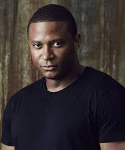

Felicity Smoak
Felicity Megan Smoak (nacida en 1989 - fallecida en 2040) es la hija de Noah Kuttler y Donna Smoak, esposa de Oliver Queen, madrastra de William Clayton y madre de Mia Smoak. Tecnológicamente dotada, especialmente en el campo de la informática, Felicity es miembro de el Equipo Arrow, ex DE de Palmer Technologies y cofundadora y DE de Helix Dynamics.
ó muchos favores relacionados con sus actividades de vigilancia.
Oliver Queen
Oliver Jonas "Ollie" Queen (nacido el 16 de mayo de 1985 - fallecido el 10 de diciembre de 2019) es un ex playboy multimillonario, convertido en superhéroe de Star City.
Luego de naufragar después de que el yate de su familia se hundiera, Oliver llegó a Lian Yu, una isla en donde se embarcó en una misión de supervivencia y autodescubrimiento, aprendiendo habilidades de supervivencia. Viajó a China y Rusia en misiones como agente de A.R.G.U.S. durante algún tiempo, se convirtió en miembro de la Bratva, y el vigilante asesino Kapiushon.

John Diggle
John fue contratado para proteger a Oliver Queen tras el regreso de este a Starling City y acabó descubriendo las actividades de Oliver como justiciero, pasando a formar parte de su equipo y convirtiéndose en un auténtico apoyo. John conoció en el ejército a Lyla Michaels, con quien se casó, se divorció y luego volvió a casarse. Los dos tuvieron una hija, Sara Diggle.
|
Arrow conoce a Barry (Flash)
en el capitulo temporada 2 capitulo 8 , Barry viaja a ciudad star
a investigar un caso sobre algo imposible y va investigar y se encuentra con en team arrow.
|
|
|
Arrow conoce a Kara (Supergirl)
en el capitulo temporada 5 capitulo 8 , los ailens invaden la tierra para llevarse
a berry el team arrow, las legendas, el team flash y supergirl se unen para evitar
la invasion y salvar a Barry.
|
|
|
Arrow conoce a las legends
en el capitulo temporada 3 capitulo 8 , Oliver y Barry Allen se llevan
a Kendra Saunders y Carter Hall a una localización remota para mantenerlos ocultos
de Vandal Savage mientras averiguan como derrotarlo. Malcolm acuerda una reunión
con Vandal, Green Arrow y The Flash que no sale como estaba planeada. Mientras tanto, Felicity
, Thea , Diggle y Laurel trabajan con el Team Flash para crear un arma suficientemente
poderosa como para destruir a Vandal Savage. Thor Freudenthal ha dirigido el episodio con historia de
Greg Berlanti y Marc Guggenheim y guión adaptado a televisión de Brian Ford Sullivan y Marc Guggenheim
|

|
|
Arrow conoce a Jefferson (Black)
en el capitulo 8 temporada 8 cuando todas las tierras corren riesgo de desaparecer,
el monitor busca la tierra que spueda salvar a todas las tieeras, tierra uno fue la
elegida para salvar a todo el multiverso peliendo contra el antimonitor para salvar a todo el multiverso
|

|
|
Arrow conoce a Kane (Batwoman)
en el capitulo 8 temporada 8 cuando todas las tierras corren riesgo de desaparecer,
el monitor busca la tierra que spueda salvar a todas las tieeras, tierra uno fue la
elegida para salvar a todo el multiverso peliendo contra el antimonitor para salvar a todo el multiverso
|

|
|
Arrow conoce a clark (Superman)
en el capitulo 8 temporada 8 cuando todas las tierras corren riesgo de desaparecer,
el monitor busca la tierra que spueda salvar a todas las tieeras, tierra uno fue la
elegida para salvar a todo el multiverso peliendo contra el antimonitor para salvar a todo el multiverso
|

|